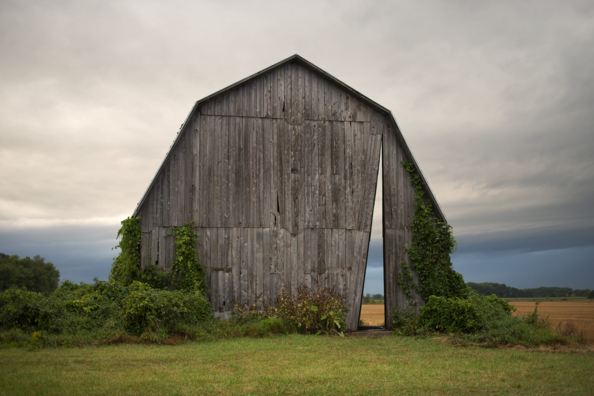
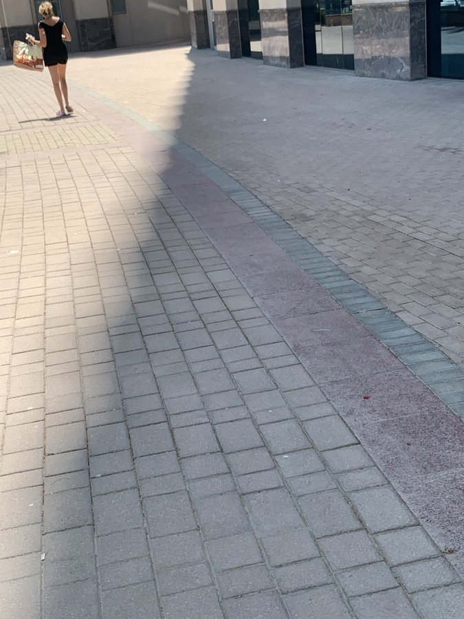
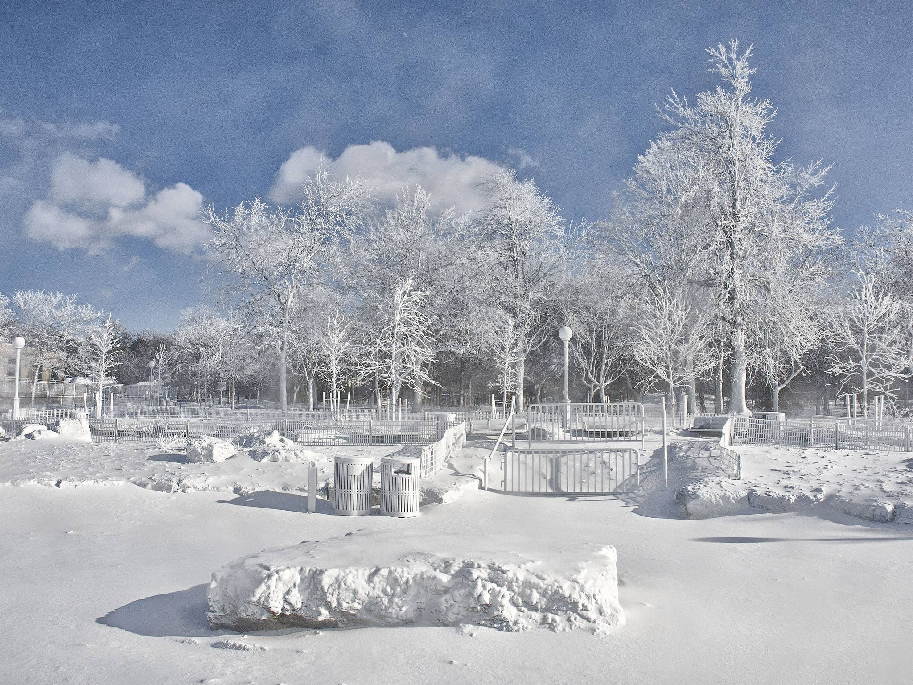
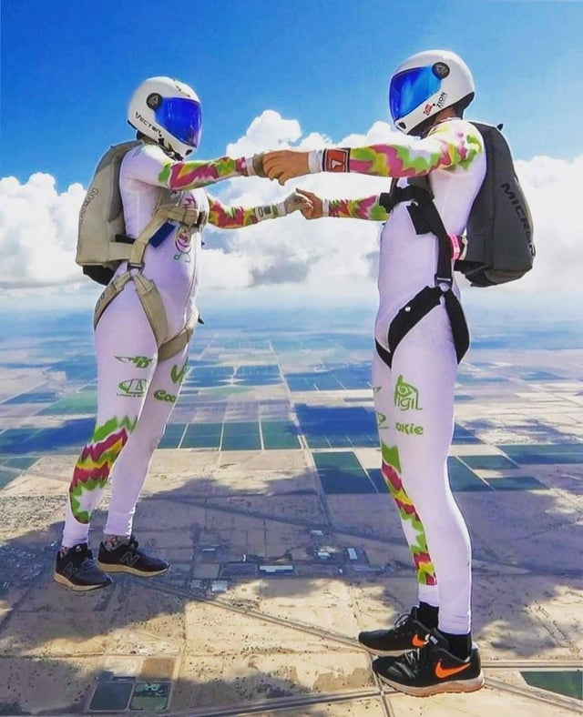
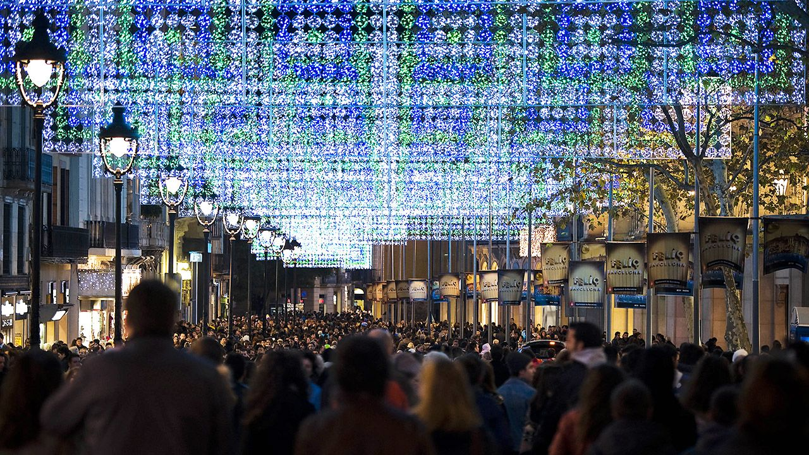
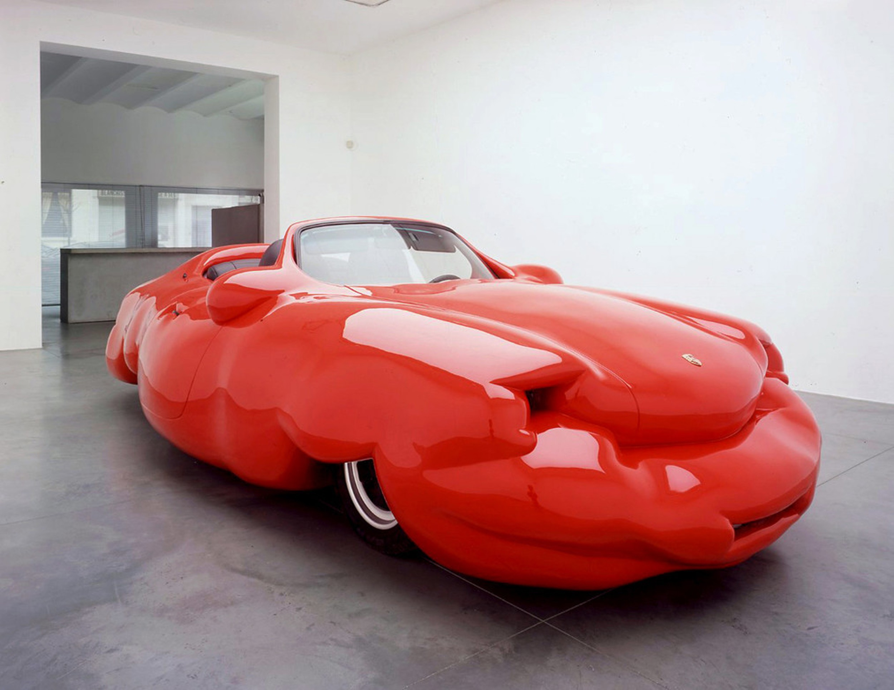
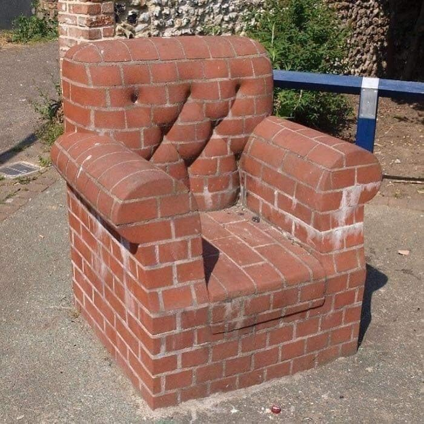
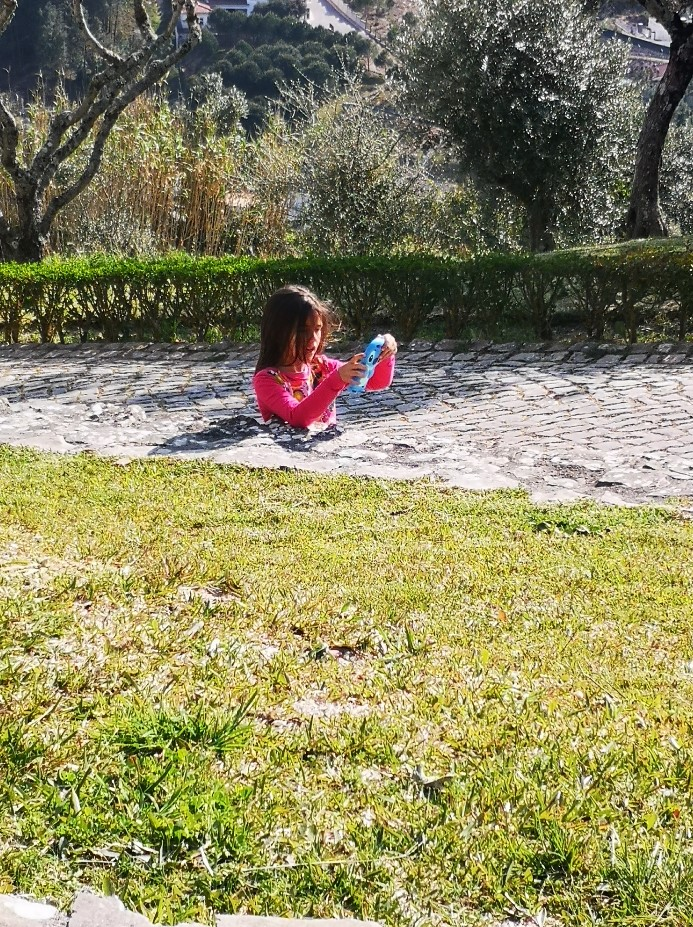
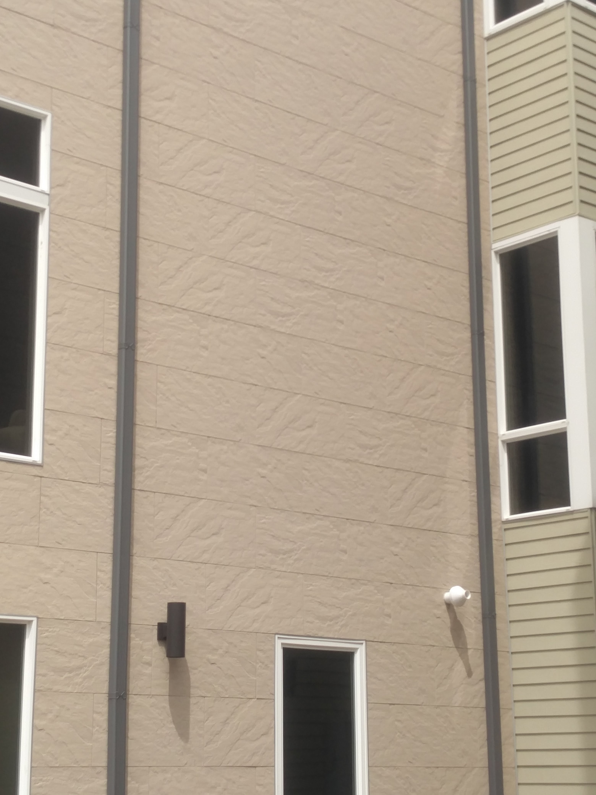
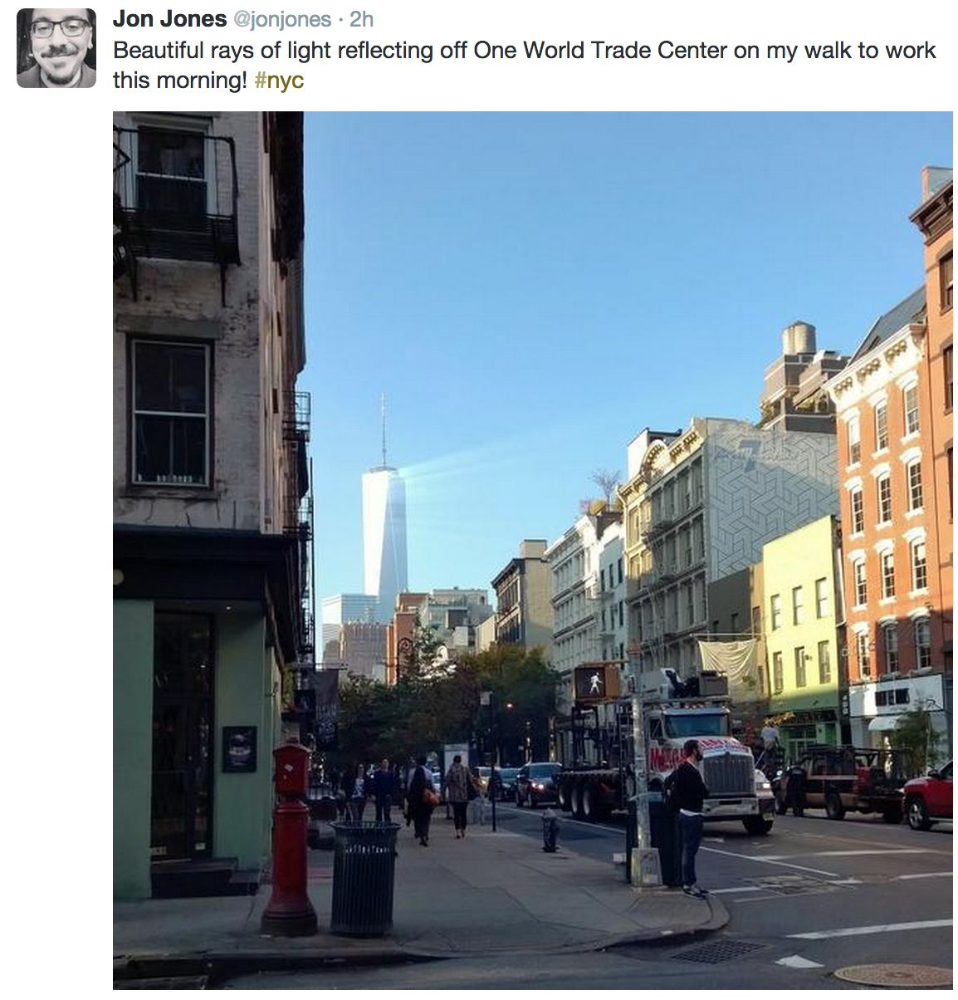

|  | It's frustrating when you lose a triangle in your mesh; having backface culling cause the interior to disappear just calls more attention to the problem. Source |
|  | Low quality shadow filtering (via Morgan McGuire's RT). Source. Similar sampling problems here. |
|  | Lights only render, materials unassigned (thanks, Moritz Weller). Source, third picture in series. |
 | Procedural modeling bug (via Pete Shirley). Source |
|  | When scale factors go awry (found on reddit's r/confusing_perspective). Source |
|  | Uninitialized data in a render target texture after rendering all 3D objects but before rendering the skybox (thanks, Adam Sawicki). Source |
|  | To quote Stefan Werner, "Subtract 0.5 from the displacement map," or an artwork by Erwin Wurm. Source |
|  | Box mapping (thanks, Pierre-Félix Breton). Source |
|  | Y translation problem, or she's behind a ground-level wall (thanks, Ryan Haines). Source |
|  | Only had enough memory for five different textures [click image to see the full-sized photo for the effect] (thanks, Kienan A.). |
| Bad vertical positioning of a trash bin in a scene, or a wet spot in front of it. Source | |
 | It's not uncommon to accidentally apply the same texture and shader to all surfaces (thanks, Pierre-Félix Breton). Source |
 | When you can only afford a 10x10 shadow map (courtesy of Mauricio Vives). |
 | Environment mapping on a simple test object, or the Cloud Gate sculpture in Chicago. Source |
 | Bug in the interpolation of samples in a shadow map, or arrays of LED lights? The title of this work is "My country is so poor it even has low quality shadows." Source |
 | Multiple textures put in the same image to avoid texture switching, or a single photo. Many other nicely-aligned photos here. Source |
 | Extreme Peter-Panning of shadows, or Lake Charlevoix in Michigan has the clearest ice you will ever see. Source |
 | Odd bump mapping, or entirely flat farmland in eastern Colorado with wind-blown and melted patches of snow. Source |
 | NPR and realistic shading combined, or a cafe in Seoul. Source. And, see a more elaborate version. |
 | Some horizontal offset problem or clipping plane bug, or the sliced footwear art of Sakir Gokcebag. Source |
 | Test scenes for area light source reflections, or Reuben Wu's work done with a moving drone equipped with a lighting rig. Source |
 | Refraction? Check. Depth of field? Got it. Caustics? Looking good. Specular reflection off of glass material? TODO... Source |
 | In Montreal, that building in the middle appears to have the front faces culled out (courtesy of Mauricio Vives). Another view to make sense of it. |
 | Lights shining on 50 disco balls makes the scene look like an undersampled ray trace. Source |
 | A debugging view showing the surfaces without textures applied. Or forced perspective. Source |
 | A tower at Google in San Francisco had its material set to be semi-transparent. Or the Napa fires around 10/10/2017 caused a haze in front of the building, illuminated by the sun (thanks, Paul Debevec; Facebook if you are friends). |
 | This church in Borgloon, Belgium, has a rendering bug. Source |
 | This image of the restaurant at LAX looks like it is a debug visualization for an acceleration data structure (thanks, David Larsson). Source |
 | Objects are made to look as if they were deleted using an image manipulation program. Source |
 | Artist Julien Attiogbe covered a building with distorted photos of itself. Source |
 | Edoardo Tresoldi's pavillion make of wire - a true wire-frame construction. Source |
 | A temple covered in ash from the Ontake volcanic eruption, Japan. From a large collection of unusual photos, it's the fourth one down. Source |
 | When the sun is directly overhead in Hawaii, it looks like a bad video game render. Source |
 | The world's blackest material looks like a bug (thanks, Pierre-Félix Breton). It is also part of an art world tiff. Source |
 | The 'Still File' project made this scene to look like a classic Whitted ray trace. See the three other images, and how they did it. Source |
original gallery | |
 | That was not the color of caustic that I expected. Source |
 | The studio-level lighting, exotic costume, short hair, and plasticy skin (from makeup) conspire to make this cosplayer read as a high-quality CG render. Source |
 | These clouds just look wrong! |
| A thin layer of water on a salt lake creates a mirrored surface that looks like an overly glossy desert sand BRDF. Source | |
 | This car's mirror surface looks like the material artist got too carried away with chrome. Source |
 | Color bleeding? Wireframe? Ambient occlusion? This looks like a beautiful radiosity test. Source |
 | These interleaved post-it notes create an effect that resembles z-fighting (thanks, Tomasz). Source |
|  | The focused crepuscular rays through the atmosphere created by reflection from that building look fake. |
 | This carpet's pattern resembles incorrectly assigned texture coordinates or a bug in a projection matrix computation. |
 | A real, 3D shoulder bag designed in a style that looks like hand-drawn animation. |
 | A colored glossy reflection creates an unexpected red wall paper pattern (thanks, Pete). Source |
 | Peter Shirley took this photograph in which the glossy highlight on the metal building appears to be too bright and in the wrong place because it is brushed metal (better check your surface normals, Pete!). |
 | Adam Sawicki sends this real life shadow that looks like the aliasing artifacts from low-resolution PCF shadow maps. Source |
 | Padraic Hennessey sends these peeled potatoes, which look like they have been ray marched with too few iterations. |
 | The reflections in the lake look like undersampled stochastic reflections. From Aras Pranckevičius' blog. Source |
 | Tomás saraceno's net installations look like Photoshop disasters when photographed. Source |
| This kind of boosted-saturation color bleeding usually only happens in CG. Source | |
 | Here's that path tracer reflection test that you rendered (Thanks, Eric). Source |
 | A snowy scene looks a lot like an ambient occlusion-only rendering (Thanks, Mauricio). |
 | Eric Haines needs better shadow-map biasing, since he's getting single-texel light leaks. Or maybe there are tiny holes in his window blinds. |
 | The camera is exactly at the height of a former flood line, making the picture look like there was a bit error leading to incorrect decoding of the lower scan lines. From The Line by Palindromo Meszaros (Thanks, Eric). Source |
 | The water is so clear that it looks like the shadow-map bias was cranked up too high (Thanks, Tomasz "Dab" Dąbrowski). |
 | Camel thorn trees against an orange dune at sunrise look like a painting (Thanks, Aaron Size). Source |
 | Aliased shadows look like bad shadow map filtering; taken in the stands of a baseball stadium. (Thanks, Padraic Hennessy). |
 | Basalt pillars look like some sort of modeling error, or hexagonal voxels. Source |
 | Real-world interpenetration (Thanks, Adam). Source |
 | Strobing lights create the appearance of temporal undersampling artifacts on the blurred snow. Source |
 | Federico Diaz's sculpture at MoCA. This image is a visualization; the real sculpture is also made of voxels but has a different shape. (Thanks, Adam). Source |
 | Justin Harder's voxel motorbike (Thanks, Adam). Source |
 | Horizontally scrambled sculpture: forgot your end of row padding again? (Thanks, Eric). Source |
 | Giant 30-story sinkhole in Guatemala is so perfectly cylindrical that it looks artificial. Source |
 | Real animated 3D sculpture that looks like a rendered wireframe teapot (Thanks, Spike). Source |
 | The tree in the midground looks like the Stanford Bunny, a common rendering test object (Thanks, Adam Sawicki). Source |
 | Looks like radiosity---a fact that was not lost on Cindy Goral. Click through to the comparable image from her seminal thesis. Source |
 | Voxel/oct-tree car--check out the shadow (thanks Eric Haines). Source |
 | Floating man optical illusion / bad shadow map bias (thanks Eric Haines and Pete Shirley). Source |
 | NPR female model (thanks Eric Haines). Source |
 | Synthetic-looking real house (thanks David Luebke). |
 | Hard stenciled shadows in the desert again (thanks Eric). Source |
 | "Undersampled" shadows in Pete Shirley's living room due to his window blinds. |
 | "L-System Plant" by Adam Sawicki (who notes it's called Rhipsalis, in case you want to get one). |
 | "Percentage Closer Filtering" by Adam Sawicki. |
 | Eric Testroete's "Low Poly Head". Source |
 | "Voronoi Diagram Model" by Adam Sawicki (although my colleague Frank Morgan would tell you that bubbles are not Voronoi!). |
 | Benedict Radcliffe's wireframe car. |
 | Sara Watson's "invisible car" (from DailyMail). |
 | "Undersampled" shadows in the Seattle Public Library's Faye G. Allen Children's Center. Source |
{kind=link}
{kind=link}
{kind=link}
{kind=link}
{kind=link}
{kind=link}
{kind=link}
{kind=link}
{kind=link}
{kind=link}
{kind=link}
{kind=link}
{kind=link}
{kind=link}
{kind=link}
{kind=link}
{kind=link}
{kind=link}
{kind=link}
{kind=link}
{kind=link}
{kind=link}